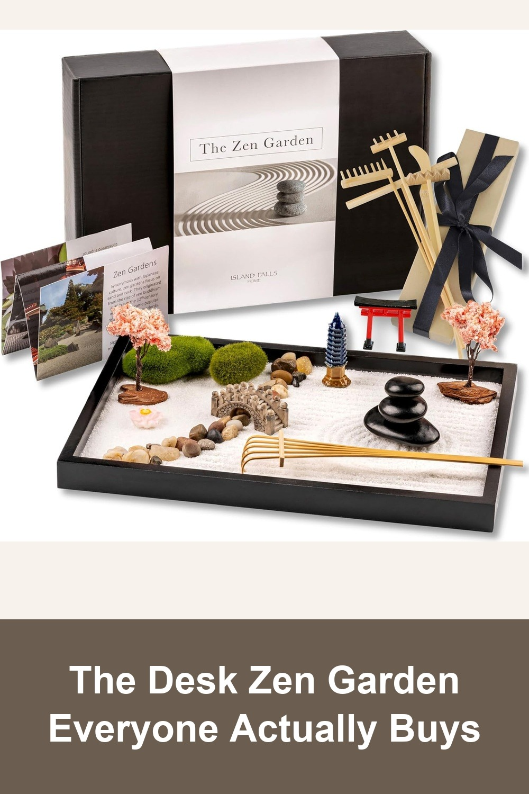
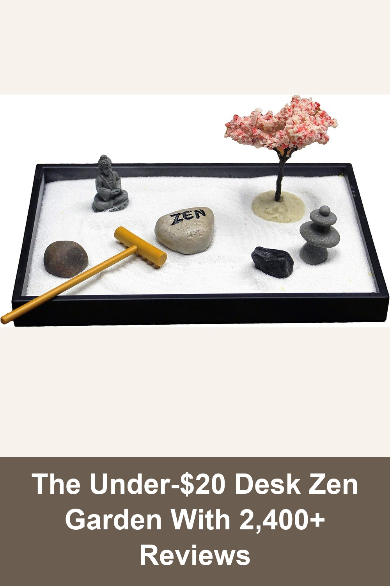
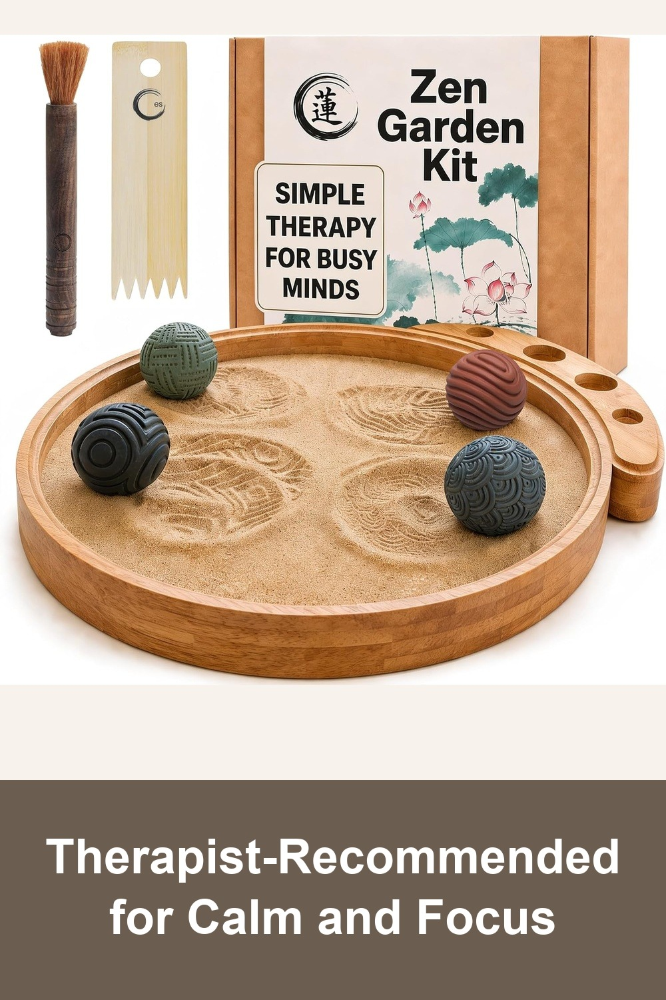

Island Falls Home Zen Garden Kit for Desk, Mini Zen Garden 11x8in Decor
The 'Overall Pick' zen garden on Amazon — a deluxe boxed set with 15 features (torii gate, cherry blossom trees, moss, a bridge) and 6 handmade wooden rake tools. Gorgeously packaged, ready to gift as-is.
This gorgeous Zen Garden is exactly as advertised. Makes a lovely gift. It's extra large with lots of pieces, and the sand is sparkly which adds to the visual relaxation.— verified Amazon buyer
View on Amazon →
Nature's Mark Mini Meditation Zen Garden Table Decor Kit with Accessories
A pocket-sized zen garden with a rake, river rocks, a 'ZEN' stone, a Buddha figure, and a cherry blossom tree — small enough for any corner of a desk, priced low enough to just try it.
Looks very stylish. Fits perfectly on a desk.— verified Amazon buyer
View on Amazon →
ENSO Zen Garden for Desk, Japanese Bamboo Sand Tray Therapy Kit
A minimalist round bamboo tray with 4 textured stone spheres — no clutter, no tiny figurines to lose. Recommended by therapists and pediatric OTs for hands-on stress relief and focus.
This little Zen garden is such a grounding presence during stressful days. I use it myself to slow down, breathe, and reset. It's well-made, calming to look at, and surprisingly effective at creating a sense of ease.— verified Amazon buyer
View on Amazon →